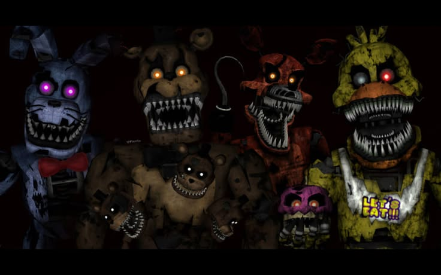
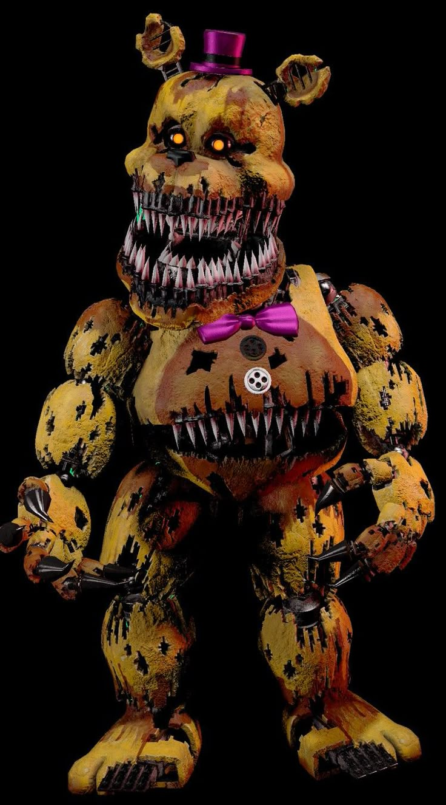
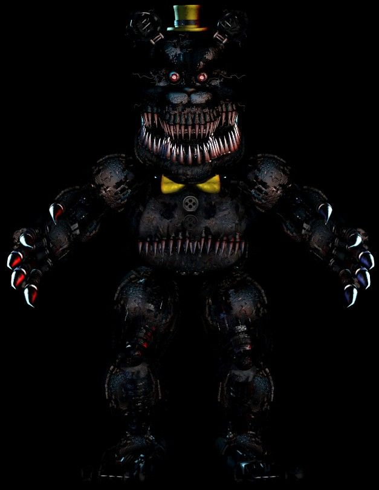
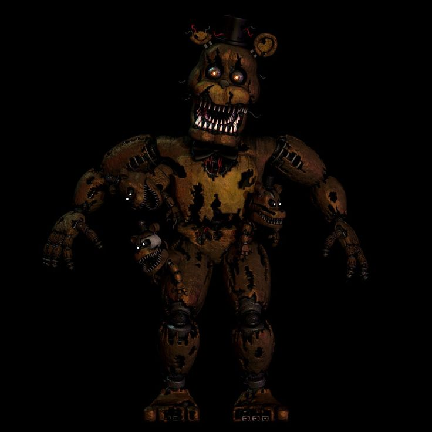
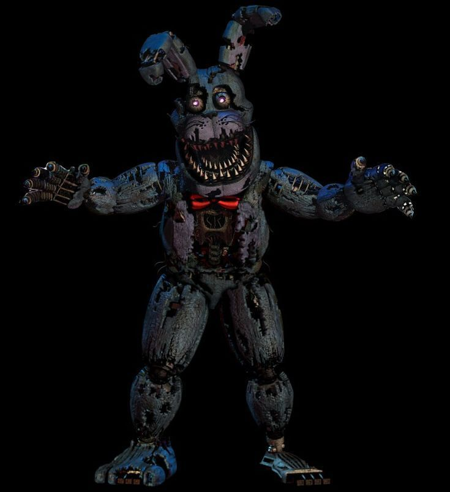
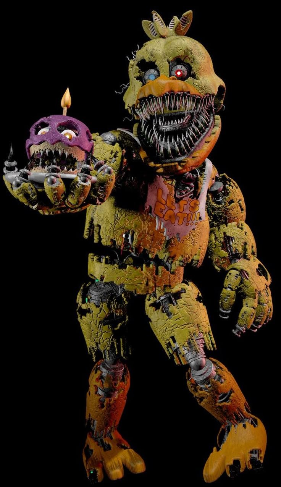
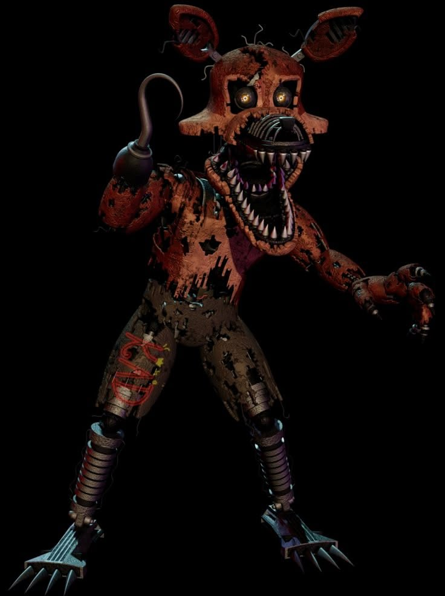

ATENÇÃO!
Esta página mostra apenas os personagens do quarto jogo(sem a dlc de Halloween inclusa).

"Let me put you back together, and take you apart all over again."/"Deixe-me te remontar, e te desmontar novamente."
Responsável pelo famoso evento conhecido como "A mordida de 83", Fredbear, que um dia foi uma figura tão amigável, aparece neste jogo na forma de pesadelo. Fredbear aparece em todas as localizações do quarto, e só vai ir embora quando o jogador piscar sua lanterna e/ou fechar as portas.
"You will not be spared. You will not be saved."/"Você não será poupado. Você não será salvo."
Uma representação de carne e sombras que surge na última noite, seguindo o mesmo esquema de Nightmare Fredbear: Nightmare aparece nas portas, escondido dentro do armário e na cama, mas muito mais agressivo, afinal, ele é o último desafio que o jogador deve enfrentar antes de zerar o jogo.
"I am remade, but not by you, by the one you shouldn't have killed."/"Eu fui refeito, mas não por você, por aquele que você não devia ter matado."
Nightmare Freddy, aparição recorrente no quarto jogo, é uma representação em forma de pesadelo do líder da banda de 1983. Freddy aparece em forma de miniaturas na cama, aumentando a quantitade de miniaturas com o tempo até que Freddy apareça, contudo, as miniaturas podem ser facilmente afastadas com a luz da lanterna.
Assim como em todos os outros jogos, este Bonnie, por padrão, ataca por apenas uma direção, esta sendo a porta esquerda. Para afastá-lo, basta verificar o corredor esquerdo e permanever parado(sem ligar a lanterna), se ouvir a respiração, feche a porta até ouvir passos.
Nightmare Chica e seu fiel cupcake irão atacar constantemente, tanto que, na DLC de Halloween, há um minigame dedicado especialmente ao infame bolinho rosa. Chica ataca o corredor oposto ao de Bonnie, o corredor direito, e pode ser afastada da mesma forma.

A astuta raposa pirata é um dos maiores desafios do jogo. Foxy, em algum momento do jogo, irá correr para dentro do armário quando o jogador não estiver olhando, e apartir deste momento, é necessário monitorá-lo constantemente. Quando as portas do armário estiverem abertas, pisque a luz lá dentro apenas uma vez para confirmar que Foxy está lá, se estiver, feche o armário até que ele se torne uma pelúcia.